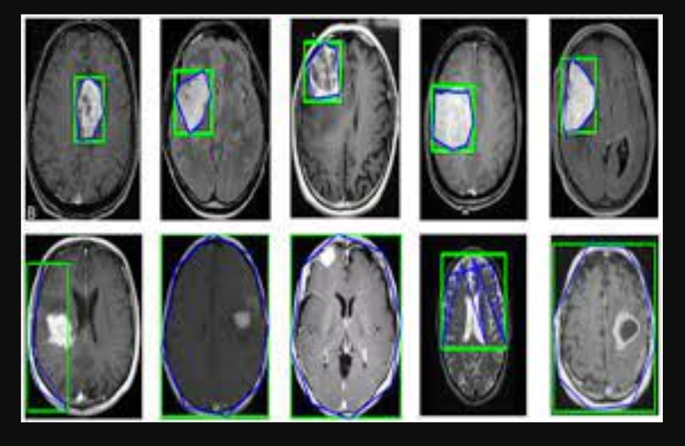

AI Brain Tumor Prediction Tool
Click below to access an AI-powered Brain Tumor Detection Tool.
Use AI for Tumor DetectionUnderstanding Brain Tumors
Brain tumors are abnormal growths of cells in the brain that can either be malignant (cancerous) or benign. Early detection is key to effective treatment. A tumor's size, location, and type are critical in determining treatment and prognosis. Brain tumors can cause a range of symptoms, including headaches, seizures, and changes in cognitive function.
Deep learning models, especially Convolutional Neural Networks (CNNs), are used to detect and classify brain tumors from MRI scans with high accuracy. These models have been trained on vast datasets of medical images and can recognize patterns that might be difficult for human doctors to detect.
Why Use AI for Brain Tumor Detection?
AI-powered models significantly enhance the speed, accuracy, and efficiency of detecting brain tumors. Here's why:
Speed
AI detects tumors in seconds, much faster than manual interpretation, allowing for timely intervention and reducing patient waiting times.
Accuracy
AI models achieve up to 95% accuracy in detecting tumors from MRI scans, helping doctors make more reliable diagnoses.
Precision
AI reduces human error, ensuring that results are consistent and minimizing the risk of misdiagnosis.
How AI Analyzes Brain Tumor Images
AI models use MRI scans to perform detailed analysis of the brain. The process involves several key steps:
| Step | Process | Impact |
|---|---|---|
| Image Preprocessing | Standardizes and enhances the MRI scans. | Improves image quality for better detection. |
| Tumor Detection | AI scans the image to identify possible tumors. | Highlights suspicious areas for further review. |
| Classification | Classifies the tumor as benign or malignant. | Facilitates early intervention for effective treatment. |
Key Statistics
Sample MRI Scan Image
This is an example of an MRI scan showing a brain tumor. AI models can analyze these images quickly and provide insights into the tumor's type and location.